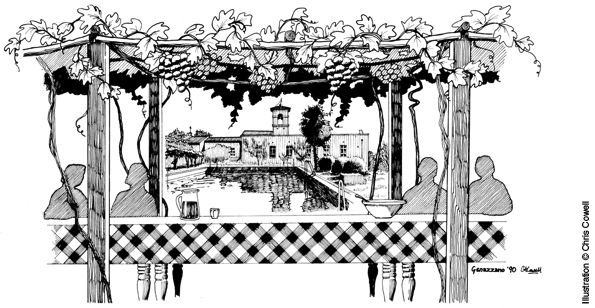

Background
One of the standard texts you’d find in most student kitchens in the 1980s was Delia Smith's Complete Cookery Course. But for some of us at Bristol Uni, who had been lucky enough to visit Villa Palazzola with Thomas Atthill, our handbook was Marcella Hazan’s Classic Italian Cookbook.
Many years after my student days I ran holidays for UK students to Villa San Pio in Genazzano, near Rome and, of course, Marcella's recipes were the foundation of everything we cooked there. By then, I had acquired the second Classic book and various others, but the thoughts expressed in the opening chapter of the original Classic resonated for everyone who experienced those holidays in the Roman hills. Marcella describes not just the cooking and structure of an Italian meal, but the importance of the act of eating.
Marcella died in September 2013 so I decided that, as soon as I had some time, I would create a tribute for those of us who appreciated her cookery writing and have learned the Italian ‘Art of Eating’.

JP – Letterpress project